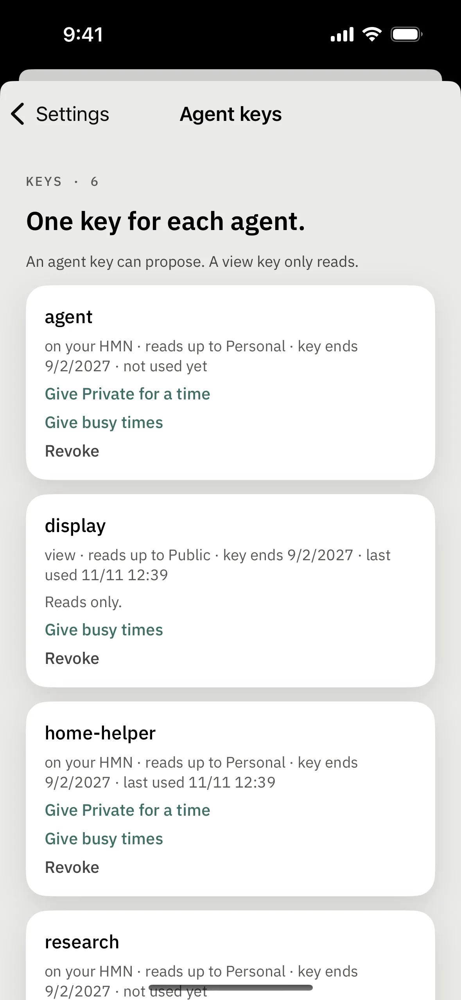
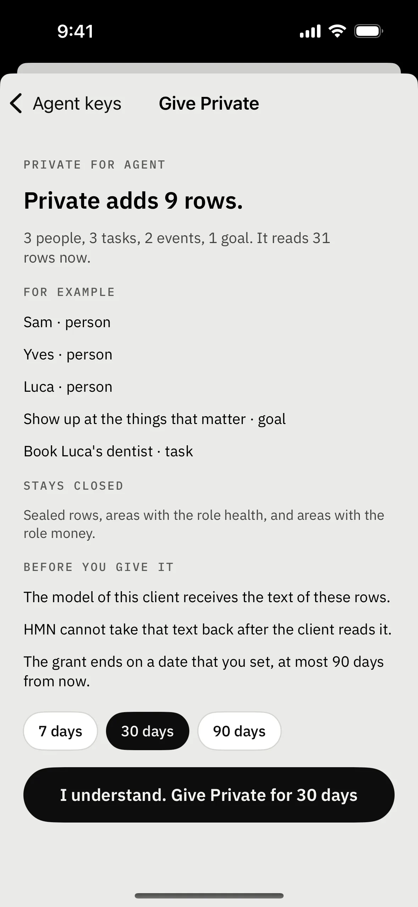
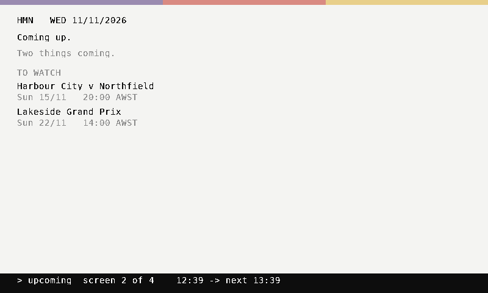

Docs
Run HMN on your Mac.
Install the server, pair your phone, and connect an agent. Each section ends with a link to the full document in the repository.
On this page
Before you start
- A Mac with macOS 14 or later.
- FileVault is on. The encryption of the database is not a substitute for it.
git. The install adds Bun if it is not there. The server has no npm dependencies.- A stable folder for the repository, for example
~/hmn. The install refuses a cloud folder, and it refuses Desktop, Documents, and Downloads.
Status
HMN is not released. One person builds it for personal use. No second person has reviewed the security design. Do not rely on the encryption until that review is done.
Install on a Mac
git clone https://github.com/hmn-tools/HMN.git ~/hmn cd ~/hmn deploy/hmn install --empty deploy/hmn status
--emptystarts a graph for your own data.--demostarts with a fictional demonstration, for a test. You cannot remove the demonstration later as a whole.- The keys go into your login Keychain. The install does not write a key into a file or the log.
- The server starts when you log in, from launchd. It listens with TLS on port 8787.
- Do not open port 8787 on your router. Use your home network, or Tailscale, when the phone is away.
- You can run the install again. A second run restarts the server. It keeps the graph and the keys.
Full document: docs/MAC-MINI.md
The recovery passphrase
The install shows a recovery passphrase of 13 words, once, to a person at a terminal. Write it on paper. A restore on a Mac that does not have your Keychain needs it.
The install does not show the words if an agent, a script, or a pipe runs it. Then open Terminal yourself and run this command:
deploy/hmn passphrase
Keep the paper away from the backup files. A backup together with the passphrase restores the graph.
Daily commands
| Command | What it does |
|---|---|
deploy/hmn status | Runs the health check. It reads the Keychain items, the launchd job, FileVault, the certificate, and the age of the newest backup. |
deploy/hmn start, stop, restart | Controls the launchd job, then says if the server answers. |
deploy/hmn logs | Shows the end of the server log. -f follows it. |
deploy/hmn pair | Makes a pairing code for the iPhone app. |
deploy/hmn passphrase | Shows the recovery passphrase to a person at a terminal. |
deploy/hmn update | Gets the new source, then runs the install again. |
deploy/hmn uninstall | Removes the launchd job. The data and the keys stay. |
The menu bar app
Open mac/HMNMenu.xcodeproj in Xcode and run HMNMenu. It needs no Apple team. The menu shows if the server answers, and it has these items:
- Start, Stop, and Restart.
- Hide. Each paired phone drops to Public. Nothing is deleted. Show my things clears it.
- Pair a phone, with a code and a QR code.
- Phones, with Revoke.
- Back up, and Restore.
- Activity. It lists each Private and Sealed read, with no title.
The server log is ~/Library/Logs/HMN/server.log.
The iPhone app
There is no App Store build. You build the app from the source.
- Open
ios/HMN.xcodeprojin Xcode, select your team, and run the app on your phone. - On the Mac, run
deploy/hmn pair. It prints a pairing code, the certificate fingerprint, and the server address. - In the app, tap the mark and type the three values into Settings. Tap Pair this phone.
- The code works one time, and it ends after ten minutes.
- The phone stores its key in the Keychain. It accepts only the certificate with that fingerprint.
- Do not copy the owner key onto the phone. Pair the phone.
- Capture goes to one inbox: the plus button, the share sheet, Siri, and the shortcut "Add to HMN".
The app was run in the simulator. It was not run on a real iPhone.
Full documents: docs/RUNNING.md, docs/SHORTCUTS.md, docs/TESTFLIGHT.md
Tiers and readers
Each row has a tier. Each reader has a ceiling. A row above the ceiling of a reader is absent for that reader. It is not blanked. One policy layer decides this for the phone, the widget, the display, and each agent.
| Tier | Where it can show |
|---|---|
| Public | A shared display, a lock screen, a widget, and the phone. For example, the start time of a race. |
| Personal | The default. Your phone and your widgets. Not the shared display, and not the lock screen. |
| Private | The phone, only after you unlock it. For example, a family date. |
| Sealed | Hidden until you open the vault on the phone. For example, a health note or a passport note. |
| Reader | Ceiling |
|---|---|
| Shared display, lock screen | Public |
| Widget | Personal |
| Unlocked phone | Private |
| Vault on the phone, after Face ID or the passcode | Sealed, for five minutes |
| Agent key | Personal. Private only while your grant for that one key is open. Never Sealed. |
| Guest | Public |
Hide on a phone drops that phone to Public until you clear it. Hide deletes nothing.
Full document: docs/PRODUCT.md
Proposals
Software cannot write. A worker, a plugin, an import, or an agent files a proposal. The Agents screen on the phone shows one proposal at a time, with the change, the reason, and the buttons Decline and Approve. Nothing is saved before you approve.
- Review is the default.
- You can set a rule for one worker or one plugin: Review, Auto, or Deny.
- Four things always wait for you: a delete, a change to a tier or an area, Sealed data, and an outside agent. No rule changes these.
- Activity lists each decided proposal. You can undo an accepted change there.
- A decline leaves no trace in the graph.
Full document: docs/UX.md
Connect an agent
HMN is a store. It is not an agent, and it has no chat. Your agent connects to it with MCP. On the same Mac, the MCP client starts a small program that is a pipe to the running server. The agent key is in the Keychain, so the command needs only the address of the certificate.
Claude Code
claude mcp add hmn -- bun ~/hmn/server/src/stdio.ts \ --ca "$HOME/Library/Application Support/HMN/data/tls/ca.crt"
Claude Desktop
Put this in claude_desktop_config.json. Use absolute addresses, and replace you with your user name.
{
"mcpServers": {
"hmn": {
"command": "bun",
"args": [
"/Users/you/hmn/server/src/stdio.ts",
"--ca",
"/Users/you/Library/Application Support/HMN/data/tls/ca.crt"
]
}
}
}The settings for OpenClaw and OpenJarvis are in the full document. They were not run against HMN.
The tools
| Tool | Use |
|---|---|
search | Reads. Finds entities by words, best match first. |
get_entity, list_entities | Reads. One entity, or each entity of one type. |
list_links, neighbours | Reads. The links of one entity, and the entities around it, out to three links. |
list_proposals, proposal_status | Reads. The proposals that the key can see, and the state of one proposal. |
free_busy | Reads. The times in which you are busy, with no title. It is in the list only when you allow it for the key. |
propose_create, propose_update, propose_delete, propose_link | Proposes. You decide. |
capture_inbox | Proposes. Puts text in your inbox. |
What an agent cannot do
- Read above the ceiling of its key.
- Read an area with the role health or money, with the default agent key.
- Approve a proposal, or write an entity or a link.
- Be accepted with no review. Only a worker or a plugin inside HMN can have an Auto rule.
An agent sends what it reads to its own model. HMN cannot take that text back. The ceiling of the key is the control that you keep.
Full document: docs/CONNECT-AN-AGENT.md
A key for each agent
Give each agent its own key. Each key has its own limits, its own read log, its own approval rules, and its own revoke. You can stop one agent and leave the others.


- Make a key on the phone, in Settings, Agent keys. The phone does not receive the key. The server puts it in the Keychain of the Mac as
hmn.agent.<name>. - Start that agent with
--key-name <name>afterstdio.ts. - A view, such as a display or a widget, gets a view key. A view key reads Public rows, and it cannot propose.
- A new key reads up to Personal, or up to Public. It ends after 90 days, unless you set a different time.
- Areas with the role health or money are closed for a key, unless you open that role for the key.
- The log shows what each key read: each search with its words, and each entity.
Private for a time
You can give one key the Private tier, for at most 90 days. First you see a preview of the rows that this adds, from your real graph. When the grant ends, the key reads at Personal again, and it still works. No key reads Sealed.
Busy times
A key can get the times in which you are busy, with no title and no other detail. This needs two switches, and both are off at the start: one on the calendar, in Settings, Calendars, and one on the key, in Settings, Agent keys. One call covers at most 60 days.
The proposal contract
This section is for a person who builds an agent. The contract is the public interface of HMN for a write. A plugin inside HMN and an agent outside use the same contract.
| Part | Who sets it | Meaning |
|---|---|---|
| Source | The server | key:<credential id> for an agent. An agent cannot name its own source. The approval rules use it. |
| External id | The agent | The id of the record in the other system, in entity.external_id. A later run can find the entity with it. |
| Idempotency key | The agent | The same key from the same source returns the first proposal. Send it on each retry. |
| Tier | The server | The strictest tier of the rows that the proposal touches. The agent can ask for a stricter tier. It cannot ask for a more visible one. |
A proposal is pending, then approved, rejected, expired, or undone.
{
"entity": {
"type": "task",
"title": "Renew the parking permit",
"status": "open",
"kind": "task",
"due_at": "2026-12-01",
"external_id": "mail-4411"
},
"reason": "A message from the council asks for the renewal by 1 December.",
"idempotency_key": "mail-4411:create"
}- Send an idempotency key with each proposal. A good key is the id in the other system and the operation.
- Read
proposal_statusbefore a new run proposes the same thing with a new key. - Take a decline as a no. Do not propose the item again with a new key.
- Give one clear reason. The owner reads it on the phone.
Full documents: docs/CONNECT-AN-AGENT.md, docs/SCHEMA.md
An agent away from your Mac
An agent that does not run on your Mac uses a second port. The port is off until you turn it on, and it needs two switches.
- Start the server with
HMN_EXTERNAL_MCP=1. This binds port 8788. - Switch the gate on, in the menu bar app on the Mac. The same switch is the kill switch.
- Port 8788 serves
/external/mcpand the OAuth discovery documents. It does not serve the admin API, the phone API, or the display. - The cap is Personal, or Public if you choose that for the client. Sealed is refused for each client.
- The tools read and propose. There is no approve tool.
- Each client has a limit of 60 calls in 10 minutes. A token ends after 30 days.
- To reach it from the internet, use Tailscale Funnel on port 8788 only. Do not publish port 8787.
Full document: docs/EXTERNAL-AGENTS.md
A guest
A guest is the agent of another person, for example a friend who wants to find a time to meet. It is an outside client with three limits.
- It reads Public only.
- It can propose a new event, or leave a short text in your inbox. It cannot propose a change, a removal, or a link.
- Each proposal waits for you. No rule accepts it.
With busy times on, the guest reads the times in which you are busy, proposes an event in a free hour, and reads the status until you decide. After an approval, the guest learns that you approved. It cannot read the event. Revoke the guest after the meeting is set.
Calendars
HMN reads the ICS address of a calendar every 15 minutes. The calendar stays the source of truth. HMN does not write back.
- Add a calendar on the phone, in Settings, Calendars.
- For Google Calendar, use the "Secret address in iCal format" of the calendar.
- Each calendar has its own tier.
- A mirrored event is accepted with no review, unless you set that calendar to Review.
- The address is a secret. HMN does not show it in a response or in an error.
- Set a calendar that another person controls to Review, or to a tier above the shared display.
Full document: docs/RUNNING.md
Workers and models
Six small jobs run on your Mac. Each one reads through the policy layer and files proposals. No worker reads Sealed rows, and no worker can approve.
| Worker | What it proposes |
|---|---|
| Morning | The focus line of Today, and the first three items. |
| Week | The weekly review. |
| Triage | A task, a person, or a link, from a note in the inbox. |
| People | A birthday, an anniversary, or a note that it has been a while. |
| Fixtures | A "What to watch" note, with no results. |
| Goals | One next step. |
Three ways to run a worker
- No model. This is the default. The worker uses fixed rules, and it opens no connection.
- A local model.
deploy/hmn install --local-llminstalls Ollama and gets one model for the memory of your Mac. The model listens on your Mac only. - A cloud model. It is off for each worker until you turn it on for that worker, name the endpoint, choose a tier, and accept the warning. Private and Sealed rows do not go to a cloud model. A monthly cap, ten dollars at the start, stops more cloud calls.
The settings screen is https://127.0.0.1:8787/api/v1/workers.html, on the Mac.
Full documents: docs/MODELS.md, docs/LOCAL-MODELS.md
A shared display
A TRMNL e-ink display on your home network can show HMN. It shows Public rows only. The server draws the image on your Mac, and it gets nothing from TRMNL.

- Point the display at
https://<your Mac>:8787. The panel shows an id of six characters. - Claim that id on the Mac. The display gets its own key.
The key of a display reads Public only. It is not the owner key. You can revoke one display and leave the others.
Full document: docs/TRMNL.md
The phone away from home
HMN opens no port on the router. Away from home, the phone gets to the Mac through Tailscale.
- Install Tailscale on the Mac and on the iPhone. Sign both into the same tailnet.
- On the Mac, run
tailscale ip -4. The server address for the phone ishttps://<that address>:8787. - Keep the same fingerprint in Settings. The app refuses a different certificate.
- With Wi-Fi off, make sure that Today loads on the phone.
Tailscale is the private network. It is not a substitute for the key or for the certificate pin. The Mac must be logged in, because the login unlocks the Keychain.
Full document: docs/TAILSCALE.md
Backups
- Make a backup with Back up, in the menu bar app. A backup is an encrypted file in the data folder.
- Restore, in the menu bar app, replaces the graph with one backup. It asks one time.
- A restore needs your Keychain, or the recovery passphrase.
deploy/hmn statusgives the age of the newest backup.- Keep a copy of the backup files on a different disk. Keep the passphrase away from them.
Security
Status
No second person has reviewed the security design. Do not rely on the encryption until that review is done.
What the server does
- The database file is encrypted on the disk. Sealed fields are encrypted a second time with a separate key. The key that opens the database is in the macOS Keychain.
- Each listener uses TLS. There is no HTTP port. The phone accepts only the certificate that it saw at the pairing.
- A pairing code works one time, ends after ten minutes, and can be made only on the Mac.
- Each key has a scope, a maximum tier, and an end date. Eight failures in ten minutes lock the source for fifteen minutes.
- An audit log with a hash chain records each Private and Sealed read. The phone keeps a copy of the newest hash.
- The server has no telemetry and no account.
What it does not do
- It does not protect against a person who is root on a running, unlocked Mac.
- It cannot make sure that Face ID ran. A stolen, unlocked phone reads Private rows until you revoke it.
- It cannot take back text that an agent read.
If you lose a phone, revoke it in the menu bar app.
Full document: docs/SECURITY.md
Update and uninstall
deploy/hmn update
The update gets the new source and runs the install again, with the options of the first install. The server restarts.
deploy/hmn uninstall
The uninstall removes the launchd job. The data folder and the Keychain items stay.
deploy/hmn uninstall --purge also deletes the data folder, the backups in it, and the Keychain items. You cannot undo a purge. The command lists what it will delete, and it asks you to type the word purge.
Try it with no install
These commands start a server with the fictional demonstration in a temporary folder. They need Bun. They make no Keychain call. Do not use this for real data, because the key is in the same folder as the data.
cd server bun test HMN_INSECURE_DEV_KEK=1 HMN_DATA_DIR=/tmp/hmn-trial HMN_HOST=127.0.0.1 bun src/index.ts
The first start prints three keys. In a second terminal, read the Today screen with the owner key:
curl --cacert /tmp/hmn-trial/tls/ca.crt \ -H "Authorization: Bearer $HMN_OWNER_KEY" -H "X-HMN-Surface: phone" \ https://127.0.0.1:8787/api/v1/screens/today
Full document: docs/RUNNING.md
What is not built
- A release for the App Store, for Android, or for the web.
- A full CalDAV client. The calendar mirror reads the ICS address of a calendar.
- Push notifications. The server does not send a notification to the phone.
- A sync with another system. An import from another system is one-time, and you approve each pass.
- A marketplace or a plugin kit. The public interface is two contracts: read and propose. Parts of the read contract are not built.
All documents
| Document | What it has |
|---|---|
| PHILOSOPHY | Why HMN exists, and what a good day with it is. A working draft. |
| DESIGN-PRINCIPLES | Eleven principles, each with a design test. A working draft. |
| PRODUCT | What HMN is for, its principles, and what it will not do. |
| STRATEGY | Where HMN sits among other software, and the decisions. |
| SECURITY | What is enforced, the threat model, and the risks that remain. |
| SCHEMA | The data model, the API, the MCP tools, and the rules. |
| UX | The screens and their text. |
| CONNECT-AN-AGENT | How to connect an agent, and what it can rely on. |
| EXTERNAL-AGENTS | An agent away from your Mac, and a guest. |
| MAC-MINI | The install, the menu bar app, and the daily commands. |
| RUNNING | A run from the source, Docker, curl, the first run, and the plugins. |
| TAILSCALE, TRMNL, MODELS | The phone away from home, the display, and the models. |
| ROADMAP | What is built, what is open, and the order. |